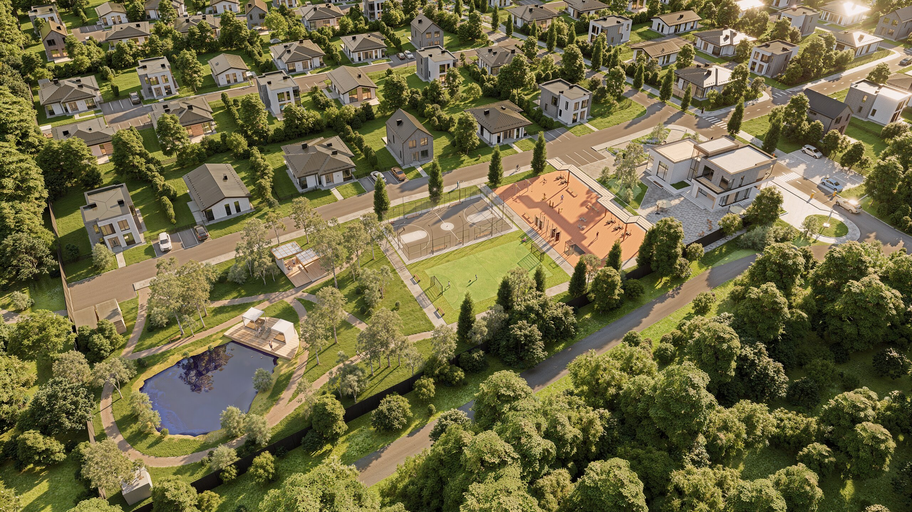
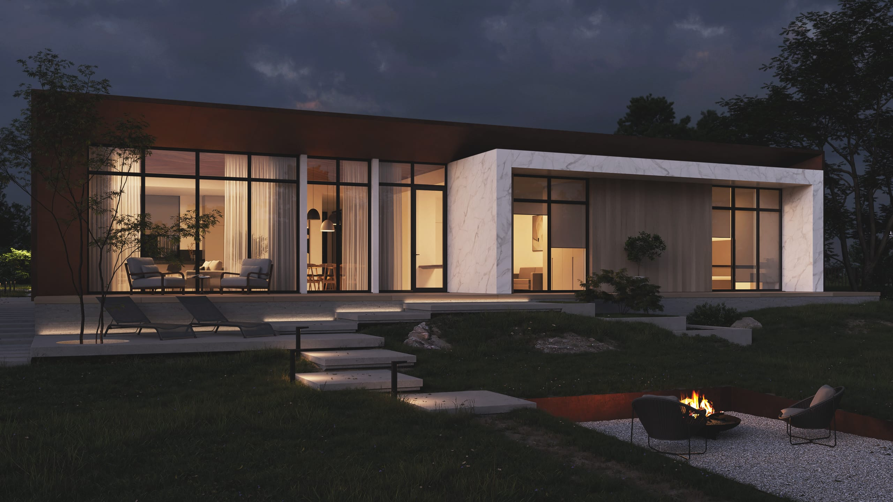
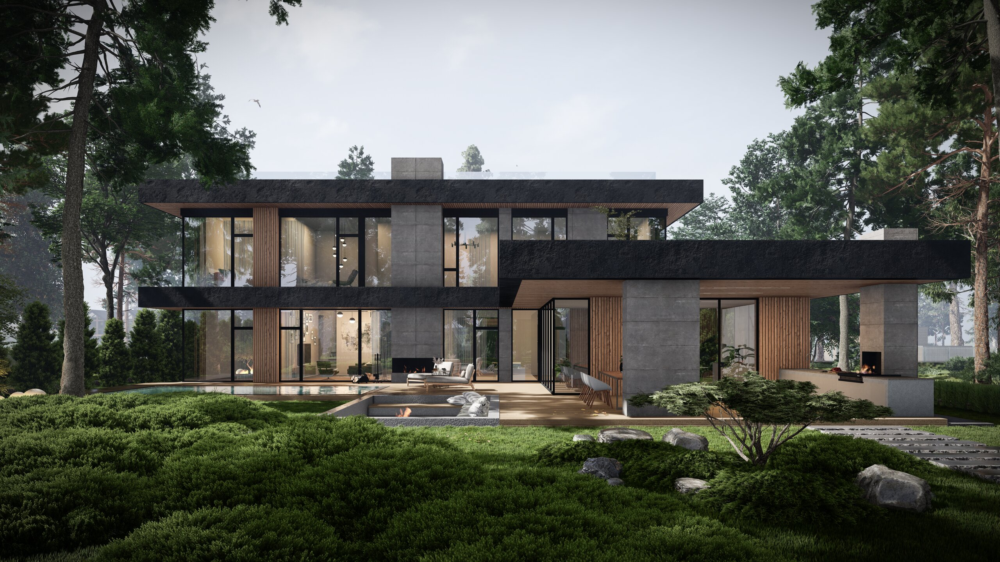
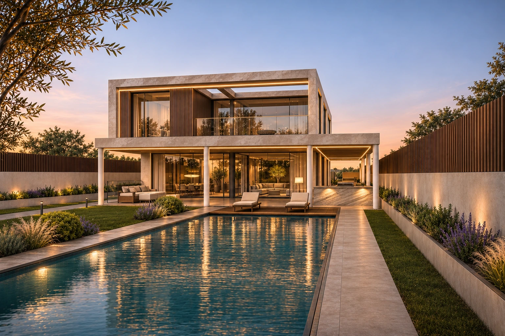
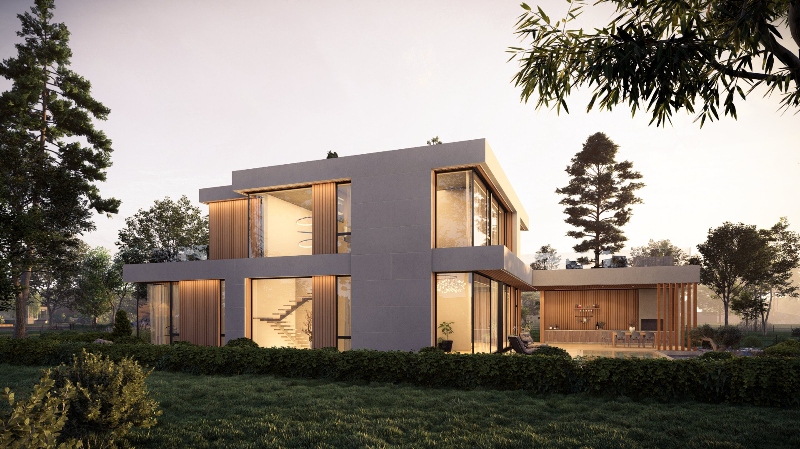
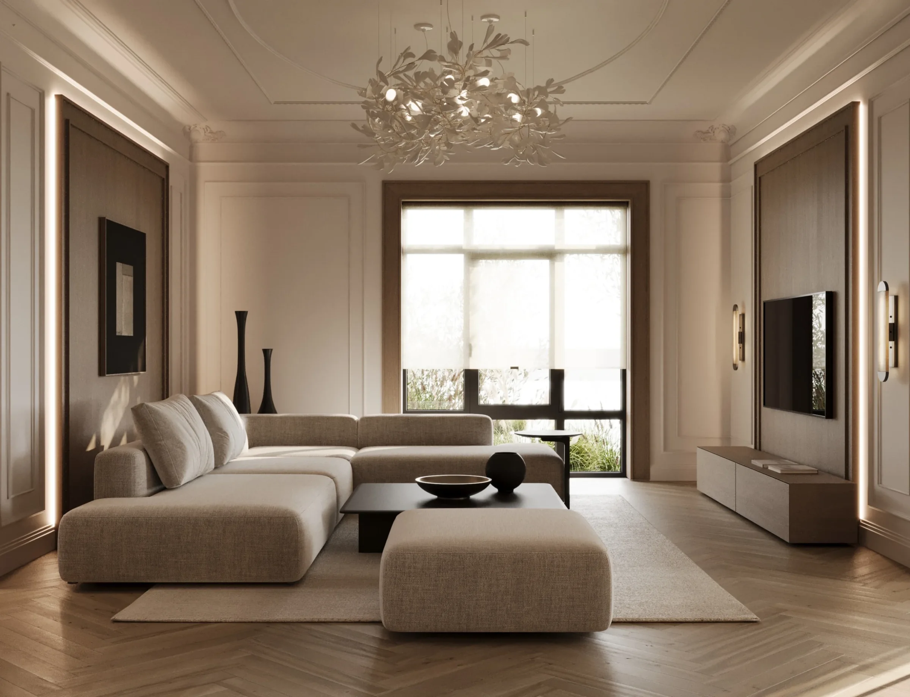
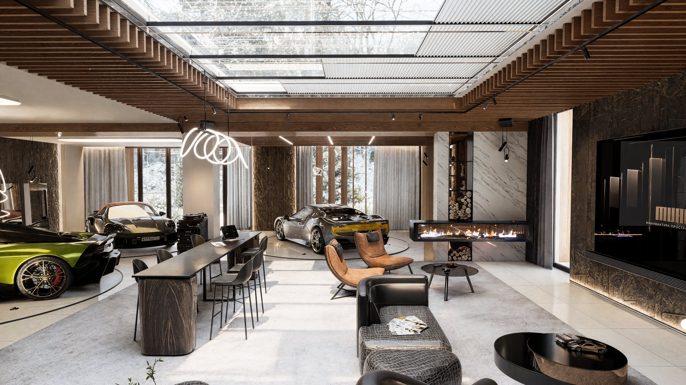
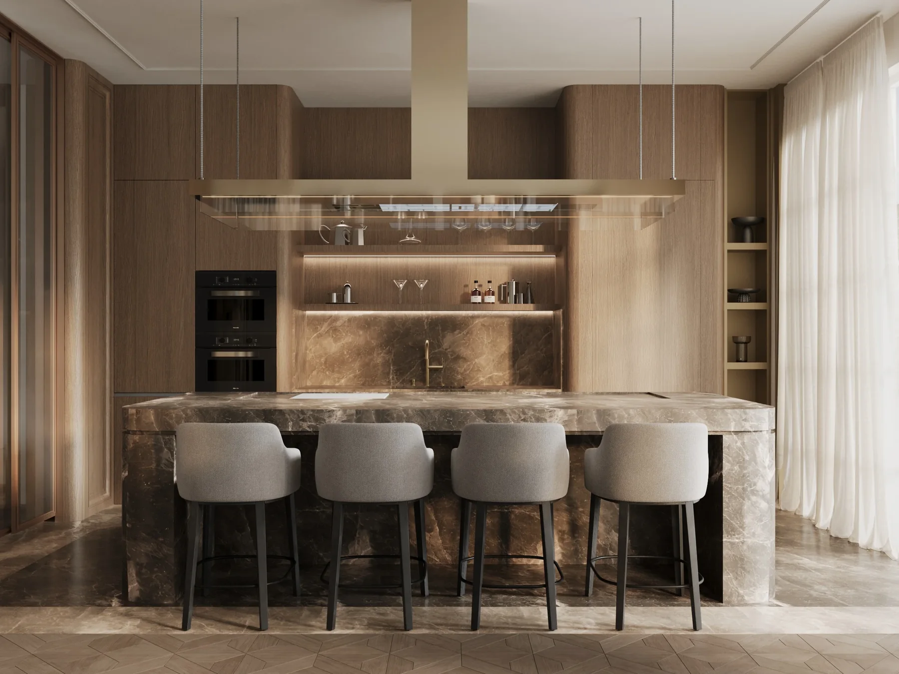
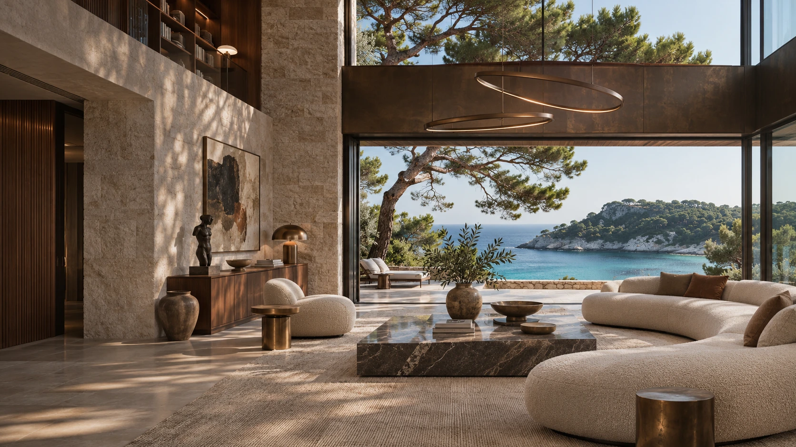

Начнём с разговораLet’s talkÖnce konuşalım
Я Аркадий, руководитель Бюро А510. Я живу и работаю в Бодруме. До покупки земли помогу понять, что здесь выгодно строить для продажи или аренды. Можно начать с разговора по телефону, даже если вы ещё не определились с проектомI’m Arkady, director of A510 Architects. I live and work in Bodrum. Before you buy land, I can help assess what makes sense to build for sale or rent. We can start with a call, even if you are still deciding what you want to buildBen Arkadi, A510 mimarlık ofisinin yöneticisiyim. Bodrum’da yaşıyor ve çalışıyorum. Arsayı almadan önce satış veya kiralama için ne inşa etmenin uygun olacağını birlikte değerlendirebiliriz. Projeye henüz karar vermediyseniz de telefonla görüşerek başlayabiliriz

Бюро A510A510 ArchitectsA510 Mimarlık
С 2013 года мы проектируем посёлки и частные дома. Бюро дважды номинировалось на премию «Посёлок года»We have designed residential communities and private homes since 2013. Our studio has received two nominations for Residential Community of the Year2013’ten beri konut yerleşimleri ve özel evler tasarlıyoruz. Ofisimiz “Yılın Konut Yerleşimi” ödülüne iki kez aday gösterildi
- 13стран, где мы работаемcountries where we workülkede çalışıyoruz
- 15+коттеджных посёлков в Россииresidential communities designed in RussiaRusya’da tasarladığımız konut yerleşimi
- 3 500+домов построено по нашим проектамhomes built to our designsprojelerimize göre inşa edilen ev


Место для домаA place for a homeEvin yeri
Ставим дома на разных отметках склона, чтобы из гостиной открывался вид, а с террасы не было видно соседей. Ещё до покупки земли оцениваем, какие участки и планировки будут востребованы при продаже или арендеWe set homes at different levels on the slope so living rooms keep their views and terraces remain private. Before the land is bought, we assess which plots and layouts will appeal to buyers or tenantsEvleri yamacın farklı kotlarına yerleştirerek salonların manzarasını ve terasların mahremiyetini koruruz. Arsa alınmadan önce hangi parsellerin ve planların alıcı ya da kiracı bulabileceğini değerlendiririz


На вашей сторонеOn your sideSizin adınıza
Веду проект и согласования, координирую подрядчиков на стройке. Если нужно принять решение, покажу, что оно меняет в бюджете и срокахI oversee design and approvals and coordinate contractors on site. When a decision is needed, I explain how it affects costs and timingProjeyi ve onayları takip eder, sahada yüklenicileri koordine ederim. Bir karar gerektiğinde bütçeyi ve takvimi nasıl etkileyeceğini açıklarım



Внутри виллыInside the villaVillanın içinde
Проектируем интерьер, подбираем отделку и мебель. Для продажи можем подготовить показательный дом, для аренды — укомплектовать виллу к приезду гостейWe design interiors and select finishes and furniture. We can prepare a show home for sale or furnish a rental villa for its first guestsİç mekânı tasarlar, malzemeleri ve mobilyaları seçeriz. Satış için örnek evi hazırlayabilir, kiralık villayı ilk misafirleri için donatabiliriz



Обсудим ваш проектLet’s discuss your projectProjenizi görüşelim
Созвонимся, проведём онлайн-консультацию или встретимся на участкеWe can talk by phone, meet online or visit a site togetherTelefonla, çevrim içi veya arsada görüşebiliriz